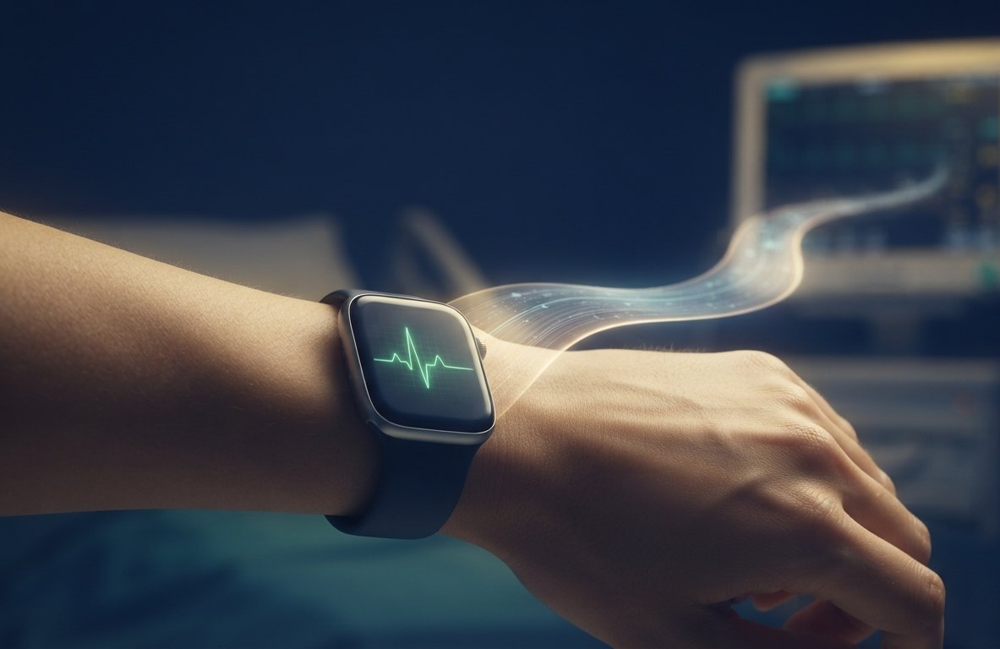
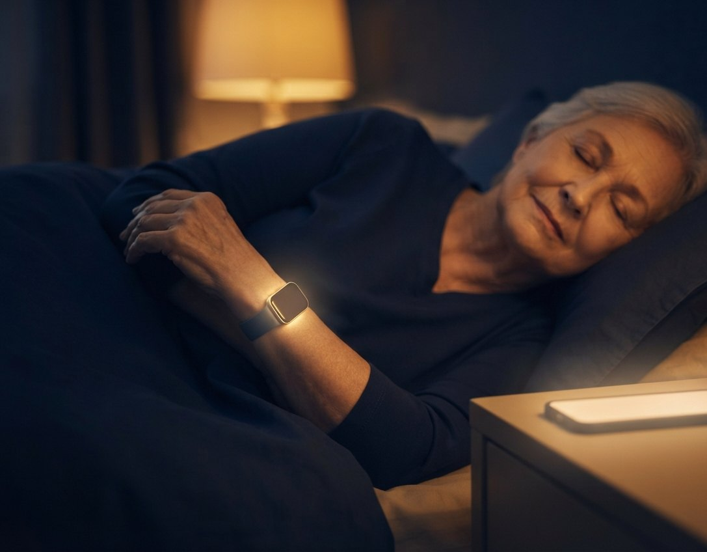
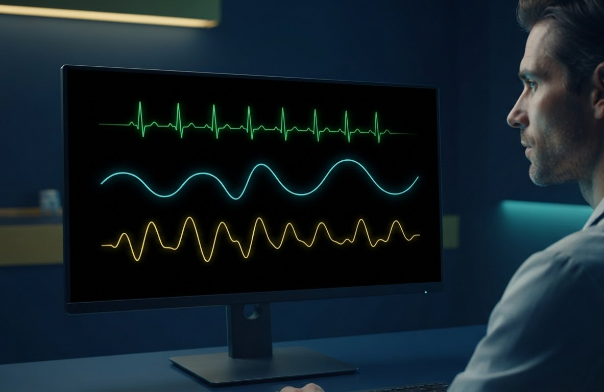

Two tiers, one wearable — open either live demo
Neither of these is a video or a mock-up. Both are working, self-contained apps you can drive yourself.
AEGIS Protector is the everyday wrist guardian; AEGIS Clinical is the
same engine on the hospital desktop. Two faces, one detection engine.
Lifestyle
AEGIS Protector
The everyday wearable: it learns your normal, catches the earliest electrical
signs of a heart attack — the K-wave — before you feel a thing, with graded audible alarms and a
silent personal-safety mode.
▶ Launch the Protector demo →
Clinical
AEGIS Clinical
The hospital-desktop sibling: the same engine on a population-referenced
Cardiac-Ischaemia NDI, where one clinician watches every patient at once on a shared danger scale.
Validated on 66,951 physician-labelled ECGs across two independent datasets.
▶ Launch the Clinical demo →

Everyone, everywhere — woven through daily life
Monitoring shouldn't end at discharge, or begin only once someone is already in a bed. The people who
need watching most are often the ones furthest from a machine: the elderly living alone, the chronically
ill recovering at home, a patient lying in bed with nothing but a phone and a watch on the nightstand.
A wearable meets them where they are — awake, asleep, at home, at work — and never looks away. The reach
is only limited by who can wear a small device, which today is very nearly everyone.
Closer to you than your phone. In a world where more people feel alone, nothing stays
nearer than the device on your body — worn through the day, through the night, through the moments that
matter. You put your phone down; your AEGIS is always with you.

How the technology works — honestly
🧠
Learns your normal
It builds a personal baseline and keeps adapting to your lifestyle — so it knows what healthy looks like for you, per activity, not an average stranger.
🏃
Knows what you're doing
It recognises and blends your activities — rest, walking, exercise, sleep — and judges you against the normal for what you're doing now. A high heart rate at the gym isn't a false alarm.
🔎
Anything-not-normal is flagged
Because it learns normal, it catches any departure — a novelty-detection approach (one-class SVM / SVR) — not just a short pre-programmed list of diseases.
⚡
Early cardiac warning — the K-wave
A dedicated channel watches for the J-wave / Osborn "K-wave" and ST changes — among the earliest electrical signs of an impending heart attack — before symptoms are felt.
🙋
Human-in-command
It flags; a clinician decides. It improves through governed retraining, never silent self-adaptation — the AEGIS discipline across every system.
🛡️
Beyond the heart
Because it's on the body and always on, it can carry personal-safety functions too — including a silent duress mode for a robbery or a threat.
The models behind it are the interpretable Support-Vector family the AEGIS programme favours — SVM,
Nu-SVM and SVR, extended with adaptive membership weighting — and every number that matters is measured
subject-independently (the same person is never in both training and test), so the
figures are honest rather than flattering.
One application among many — the hospital station
The real aim is to keep you out of hospital in the first place — pre-emptive detection woven into daily life, catching trouble early enough that it never becomes an emergency. That is exactly why the hospital is a secondary application, not the point. But if you do end up in a ward, the same device follows you in: your AEGIS is still with you. A hospital bay today is defined by the machine beside the bed — ECG, SpO₂, respiration, blood pressure, wired to a patient who can’t move far from it. If the everyday device a patient already wears captures those same signals and has learned what’s normal for them, it simply delivers its stream to the ward’s existing desktop monitoring system — the multi-parameter display clinicians already trust — no separate box bolted to the bed.
Wearable in, hospital station out. The same detection engine drives two faces: a
consumer wearable view and a clinician-grade bedside monitor — green ECG, respiration, SpO₂
pleth, and live HR / NIBP / SpO₂ / RR — from one signal source. Fewer boxes per bed, the same
clinical picture.

Stated plainly, so it stays credible. This is a feasibility demonstration of the
engine, built and validated on open research signals — not a certified medical device. Turning
the K-wave early-warning into a device that calls an ambulance on a real cardiac event requires labelled
clinical data and regulatory validation. The wearable flags; a human, and in time a certified
pathway, decides.
Why it matters
The instinct behind AEGIS is to augment, never replace — to put a quiet, honest layer of intelligence
between a person and the moment something goes wrong, and to keep a human in command of what happens
next. A wearable that learns you, watches in parallel across every signal, and can hand a
clinician-grade picture to the ward is that instinct made concrete: real-time protection,
cardiac and personal, that learns, adapts, and never looks away — always with you, every day, every moment.